Sobre o Projeto
Neste laboratório eu desenvolvi um sistema de monitoramento de servidores utilizando o Zabbix, com o objetivo de identificar automaticamente situações de uso elevado de recursos e gerar alertas em tempo real pelo Telegram. A proposta foi simular um cenário próximo ao de ambientes corporativos, onde é essencial detectar problemas rapidamente para evitar indisponibilidades.
Implementação Técnica
1. Ambiente de teste
Para este projeto foram utilizadas duas máquinas virtuais:
- VM 1: Zabbix Server
- VM 2: Servidor Monitorado
Ambas utilizam Ubuntu Server 24.04.
2. Contextualização
O Zabbix é uma plataforma open source de monitoramento utilizada para acompanhar o desempenho e a disponibilidade de servidores, redes e aplicações. Ele permite coletar métricas como uso de CPU, memória, armazenamento e diversos outros indicadores, ajudando a identificar problemas antes que eles impactem os usuários.
Dentro do Zabbix, as triggers são regras lógicas que definem quando uma determinada condição deve ser considerada um problema. Elas analisam os dados coletados pelos itens de monitoramento e, quando uma condição específica é atendida (por exemplo, um valor ultrapassando um limite por certo tempo), o sistema registra um incidente e pode executar ações automáticas, como envio de notificações ou alertas.
Neste projeto, configurei triggers para monitorar CPU, memória RAM e uso de disco, definindo que um alerta seria gerado sempre que o uso ultrapassasse 80% por um período contínuo de 5 minutos
Vale destacar que o foco principal do projeto não foi a instalação do Zabbix nem a configuração inicial do host monitorado. O objetivo central esteve na definição e configuração das triggers, bem como na personalização das mensagens de alerta, visando criar um sistema de monitoramento mais eficiente e relevante para o cenário proposto.
3. CPU
3.1 Criação da trigger de CPU
Para criar a trigger de CPU, acessei o caminho Monitoramento → Hosts → Triggers e adicionei uma nova trigger. Nela, configurei a condição para identificar quando o uso da CPU ultrapassasse o limite definido.
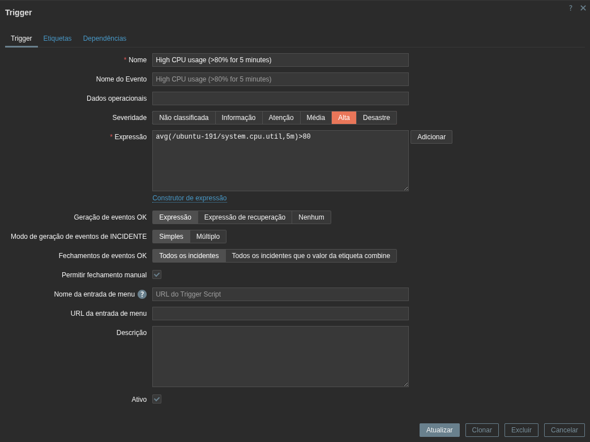
Legenda: Configuração da trigger de CPU.
3.3 Testando a trigger de CPU
Após configurar a trigger, realizei um teste prático para validar seu funcionamento, rodando o comando:
stress --cpu 8
Em seguida, utilizei outro comando para acompanhar o uso da CPU em tempo real e confirmar que o consumo estava elevado.
top
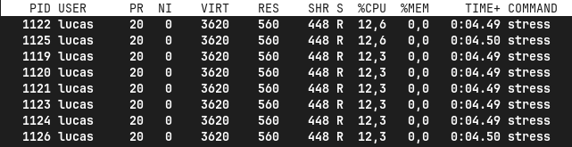
Legenda: Visualização de alta utilização da CPU.
Após alguns minutos, acessei o painel de incidentes do Zabbix e verifiquei que a trigger foi acionada corretamente, indicando que a configuração estava funcionando como esperado.
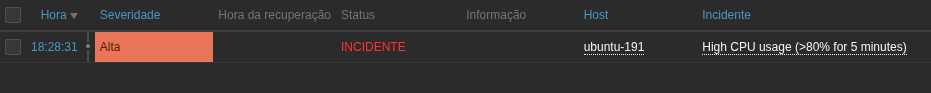
Legenda: Visualização de alta utilização da CPU.
4. Memória RAM
4.1 Criação da trigger de RAM
Para a memória RAM, segui o mesmo processo de criação da trigger, ajustando apenas a métrica monitorada para o uso de memória.
Legenda: Configuração da trigger de RAM.
4.4 Testando a trigger de RAM
Para testar, simulei o alto uso de memória com o comando:
stress-ng --vm 1 --vm-bytes 1600M --vm-keep --vm-populate -v
Após executar o comando, novamente utilizei o top para acompanhar o uso dos recursos em tempo real.
top
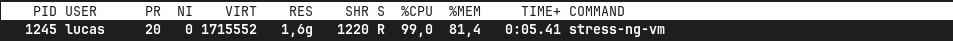
Legenda: Visualização de alta utilização da RAM.
Assim como no teste de CPU, o Zabbix identificou o aumento no consumo e registrou o incidente, demonstrando que a trigger de RAM estava funcionando corretamente.
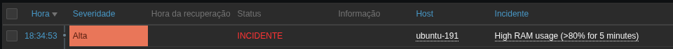
Legenda: Visualização de alta utilização da RAM.
5. DISCO
5.1 Criação da trigger de DISCO
Para o monitoramento de disco, criei uma trigger configurada para identificar quando o uso do armazenamento ultrapassasse o limite de 80%.
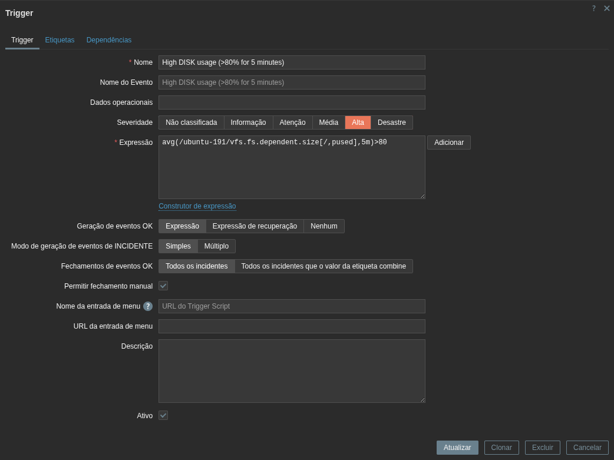
Legenda: Configuração da trigger de DISCO.
5.4 Testando a trigger de DISCO
Inicialmente, verifiquei o uso atual do disco com o comando df -h e observei que estava abaixo do limite definido.
df -h
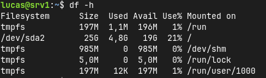
Legenda: Visualizando a utilização do disco, que mostra abaixo de 80%
Para simular um cenário de alto consumo, criei arquivos grandes utilizando o comando fallocate -l 5G teste, repetindo o processo até ultrapassar os 80% de uso.
fallocate -l 5G teste
Legenda: Visualizando a utilização do disco, que mostra acima de 80%
Após isso, o Zabbix detectou a condição configurada e registrou o incidente, confirmando que a trigger estava operando corretamente.
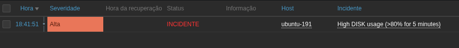
Legenda: Visualização de alta utilização do disco.
6. BOT
6.1 Criação do bot no telegram
Para enviar as notificações, criei um bot no Telegram utilizando o BotFather. Iniciei a conversa com o comando /start e segui as instruções para gerar o token de acesso do bot.
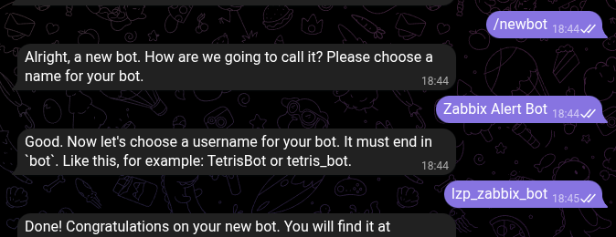
Legenda: Conversa com o BotFather para a criação do bot.
6.2 Testando o bot
Depois de criar o bot, precisei obter o chat ID para que o Zabbix soubesse para onde enviar as mensagens. Para isso, enviei uma mensagem ao bot e acessei o seguinte link trocando 'SEU_TOKEN' pelo token gerado:
https://api.telegram.org/botSEU_TOKEN/getUpdates
A resposta da API retornou o chat ID, que utilizei na configuração. Em seguida, fiz um teste manual enviando uma mensagem via URL da API para confirmar que o bot estava funcionando corretamente, trocando 'SEUTOKENAQUI' pelo token do seu bot e 'SEUID' pelo seu ID chat.
https://api.telegram.org/botSEUTOKENAQUI/sendMessage?chat_id=SEUID&text=TestandoEnvio
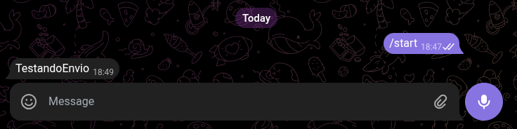
Legenda: Mensagem teste recebida pelo bot.
7. Configuração do Zabbix para enviar mensagens pelo Telegram
7.1 Criação do tipo de mídia
No Zabbix, acessei a seção de alertas e configurei um novo tipo de mídia para Telegram, inserindo o token do bot e o chat ID obtido anteriormente.
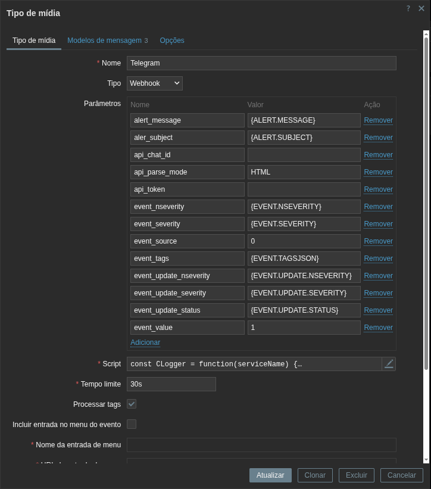
Legenda: Configuração do tipo de mídia para Telegram.
7.2 Criação da ação da trigger
Depois, configurei uma ação para que as notificações fossem enviadas automaticamente. Acessei Alertas → Ações → Ações de triggers e editei uma ação existente.
Defini uma condição para que a ação fosse executada sempre que qualquer trigger fosse acionada. Também configurei as mensagens que seriam enviadas tanto no momento do problema quanto na sua recuperação.
Após entrarmos na ação, na aba "Ação" adicionamos uma condição para que ela seja ativada.
Deixei configurado para que seja ativado quando uma trigger for maior ou igual à não classificada. Isso signfica que quando qualqer trigger for acionada, a ação será ativada e uma mensagem será enviada para o Telegram.
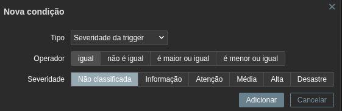
Legenda: Configuração da condição do alerta.
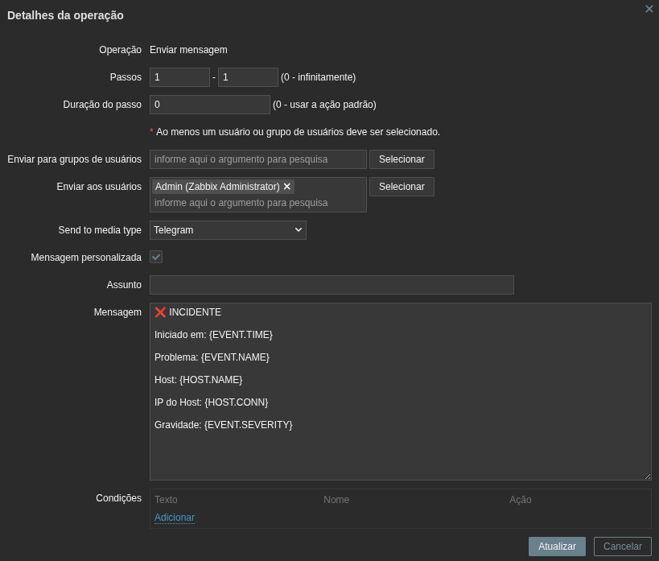
Legenda: Configuração da condição do alerta.
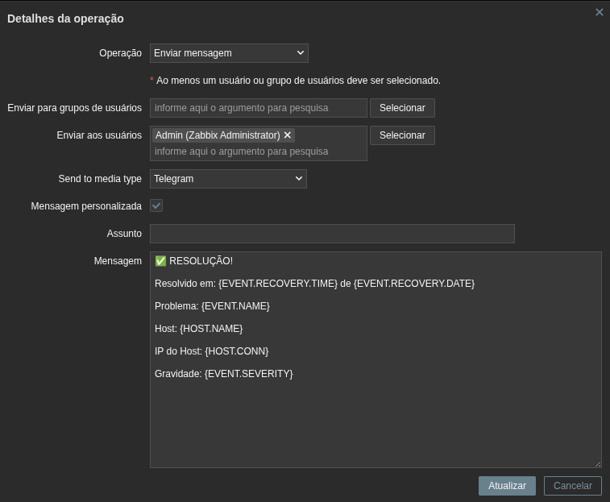
Legenda: Configuração da condição do alerta.
7.3 Configuração do usuário
Por fim, configurei um usuário no Zabbix para receber as notificações. Acessei a seção de usuários, editei o perfil desejado e, na aba de mídia, selecionei o tipo Telegram e inseri o chat ID.
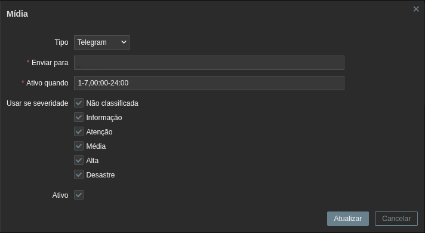
Legenda: Configuração do usuário para receber notificações via Telegram.
8. Testes Finais
8.1 Teste da trigger de CPU
Repeti o teste de consumo de CPU utilizando o comando stress --cpu 8 e verifiquei se as notificações estavam sendo enviadas corretamente pelo Telegram.
Confirmei que a mensagem foi enviada tanto quando o problema foi detectado quanto quando a situação voltou ao normal.
Mensagem ao ocorrer o incidente:
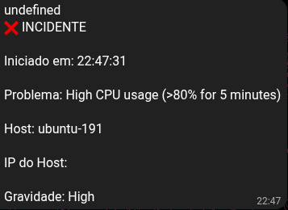
Legenda: Mensagem enviada pelo Telegram após o incidente.
Mensagem após o incidente ser resolvido:
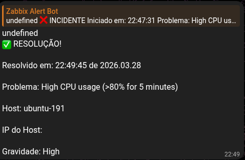
Legenda: Mensagem enviada pelo Telegram após o incidente.
8.2 Teste da trigger de RAM
Realizei novamente o teste de consumo de memória e observei o envio das notificações. Assim como no teste anterior, o alerta foi enviado corretamente no momento do incidente e também na recuperação.
Mensagem ao ocorrer o incidente:
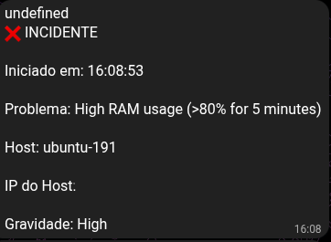
Legenda: Mensagem enviada pelo Telegram após o incidente.
Mensagem após o incidente ser resolvido:
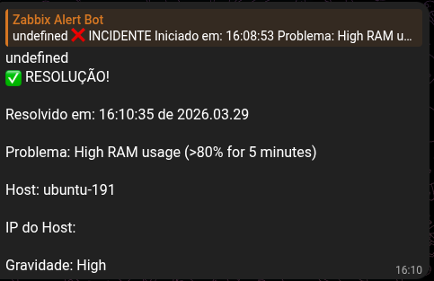
Legenda: Mensagem enviada pelo Telegram após o incidente.
8.3 Teste da trigger do disco
Por fim, repeti o teste de uso de disco, preenchendo o armazenamento até ultrapassar o limite configurado.
O Zabbix identificou o problema e enviou a notificação pelo Telegram, confirmando que todo o fluxo de monitoramento e alerta estava funcionando corretamente.
Mensagem ao ocorrer o incidente:
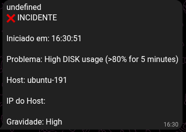
Legenda: Mensagem enviada pelo Telegram após o incidente.
Mensagem após o incidente ser resolvido:
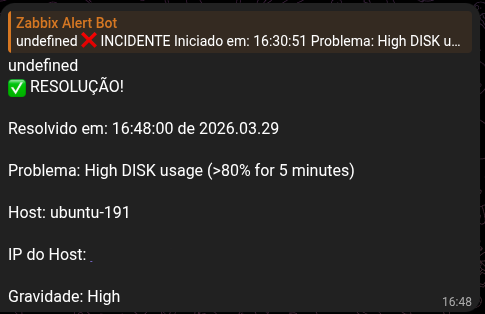
Legenda: Mensagem enviada pelo Telegram após o incidente.